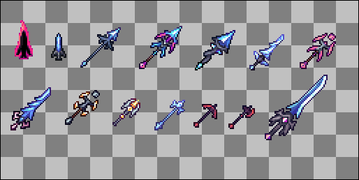

Welcome to my website
My name is Mason and I enjoy coding.
Languages I know:
• C# (3 years)
• Java (1 year)
• C++ (1 year)
• Python (1 year)
I started coding C# in Unity (around 3 years ago) and I made quite a few projects before moving on to some other languages. I started java by making Spigot plugins for a Minecraft server my friend was making. I learned some valuable skills in the process and have started making plugins to post on Spigot. I have also recently started working on a Unity game that I will showcase on here at some point.
I also do pixel art. I started pixel art about 2 years ago when I started to work on a Terraria mod called Aerovelence. A majority of my work is weapon/tool sprites from the mod:

If you wanna learn more about the mod you can check out the Aerovelence Youtube Channel.